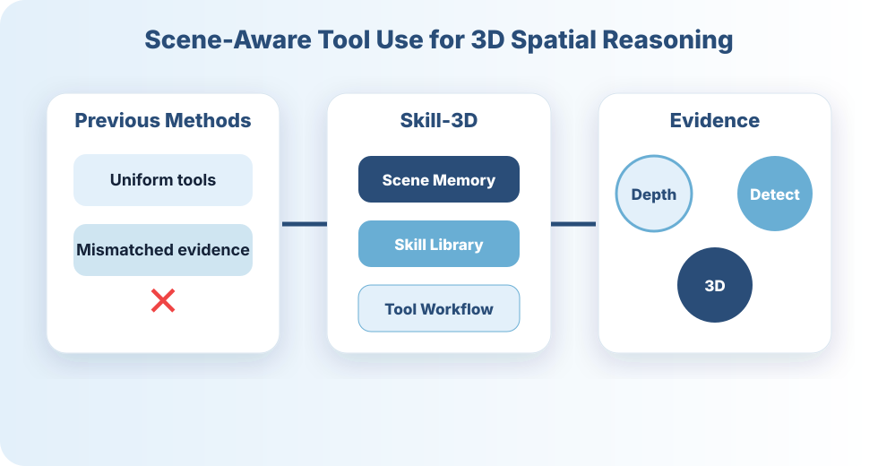
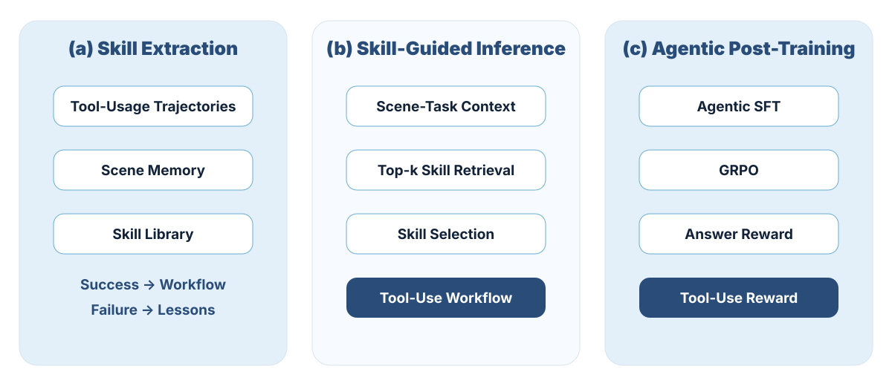
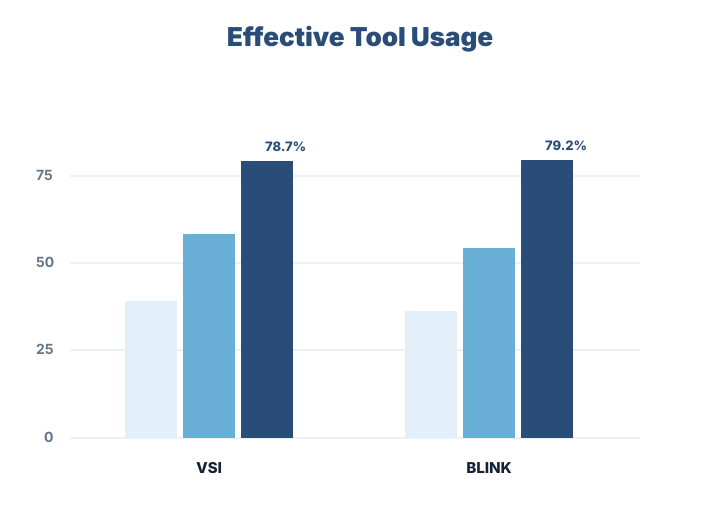
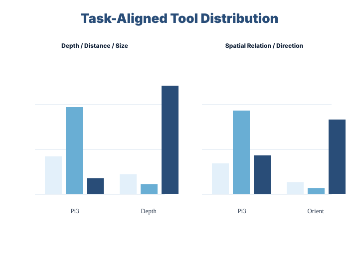

Scene-Aware Skill Extraction
Successful rollouts are distilled into reusable workflows. Failed rollouts are attached as lessons and converted into fallback rules when they provide reliable corrections.
Agentic 3D Spatial Reasoning
Skill-3D builds a Scene Memory from tool-use rollouts, evolves a Skill Library from successful workflows and failure lessons, and trains compact MLLM agents to select task-relevant tools for evidence-grounded 3D reasoning.
Identify task type, target objects, scene signature, and required evidence.
Store scene context, tool calls, valid evidence, and failure patterns.
Distill successful rollouts into skills and attach failures as lessons.
Tools are selected according to task-specific evidence requirements.
Motivation
Existing tool-augmented MLLM agents often apply uniform tool-use patterns across heterogeneous indoor scenes. This can lead to biased tool preferences, mismatched evidence, and marginal gains over non-agentic baselines.
Skill-3D addresses this by learning scene-aware skills that encode when to use detection, depth estimation, segmentation, 3D reconstruction, orientation estimation, or combinations of these tools.

Method

Successful rollouts are distilled into reusable workflows. Failed rollouts are attached as lessons and converted into fallback rules when they provide reliable corrections.
Given a query, Skill-3D retrieves candidate static and dynamic skills, selects a compact subset, and uses them to guide evidence acquisition and final reasoning.
Skill-guided trajectories supervise compact MLLM agents through agentic SFT and GRPO, teaching them to select skills, call tools, and ground answers in evidence.
Results

Skill-3D outperforms non-agentic, direct tool-use, and Think3D baselines across GPT-4o, GPT-5.4, Gemini-2.5-Pro, and Gemini-3-Flash.
Skill-guided post-training transfers to compact Qwen3-VL-4B/8B agents and improves skill selection, tool use, and evidence-grounded answering.
Analysis


Qualitative Cases
Skill-3D retrieves a depth-distance skill and combines 3D reconstruction, object detection, and depth estimation to ground closest-point distance.
Skill-3D retrieves a detection-counting skill and suppresses repeated object appearances across views using layout consistency and detection evidence.
Citation
@inproceedings{skill3d2026,
title = {Skill-3D: Evolving Scene-Aware Skills for Agentic 3D Spatial Reasoning},
author = {Anonymous Authors},
booktitle = {EMNLP},
year = {2026}
}